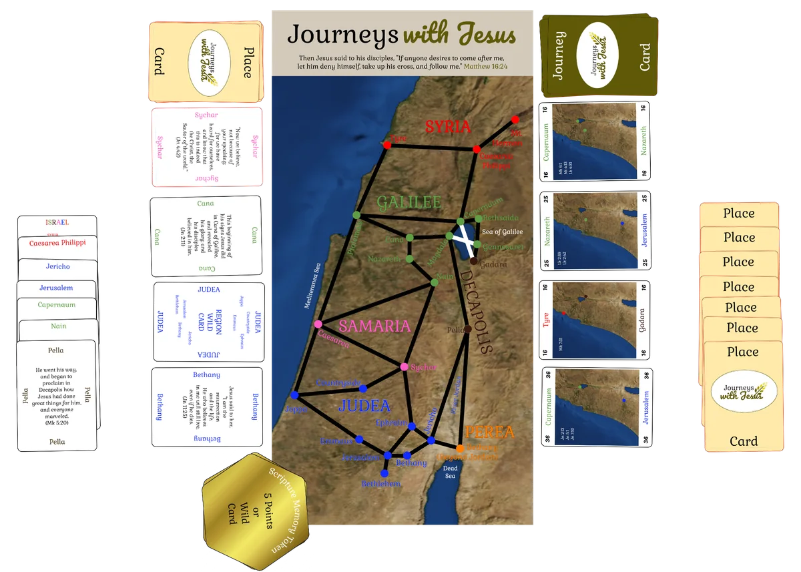
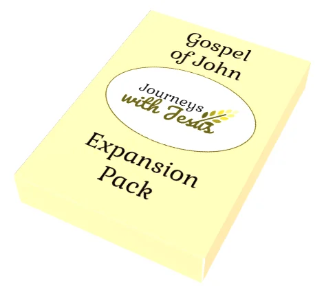

A Biblical journey game
Journeys with Jesus
Travel back to Jesus’ day, complete the journeys He took, and learn the geography of the Gospels as you play.
- Up to 4 players
- 15–30 min
- Gospel geography
- Scripture memory
$34.99
Ships from the SDG Biblical Wisdom shop.

He was always on the move
“I must preach the good news of God’s Kingdom to the other cities also. For this reason I have been sent.”Luke 4:43
Bethlehem, Jerusalem, Nazareth, Capernaum, Bethany Beyond Jordan, Cana, Nain, Sychar, Bethany, Tyre, the Sea of Galilee, the Mount of Transfiguration, the list goes on…
As we read our Bibles, we come across these names, and for most of us, we have no context for knowing where He was going. Jesus told His disciples, “follow me”.
In Journeys with Jesus, we travel back in time to Jesus’ day, completing Jesus’ journeys described in the gospel accounts. Along the way, we learn the geography of the gospels and memorize scripture making our real-life journeys through God’s Word and through life rich in context and wisdom.
What’s in the box
A gameboard, the cards that make up the journeys, and tokens for the Scripture you memorize. Tap a picture to enlarge it.
The gameboard
The map of the land of the Gospels, on satellite imagery. Black lines are roads and white lines are boat rides. 8″ x 16″.
59 Place Cards
One for each place, with a verse from the World English Bible. You collect them to make a journey.
13 Journey Cards
The journeys Jesus took, from one place to another. The points are in the four corners.
Also in the box: Region and national Wild Cards, and 12 Scripture Memory Tokens (worth 5 points each if you keep them).
How to play
Collect Place Cards to connect the places along a journey, then lay them down to complete it. The player with the most points wins.
Game setup
- Place the Game Board face up where everyone can reference it.
- Deal 7 Place Cards to each player.
- Place the remaining Place Cards face-down as a draw pile.
- Take the top 4 cards from the draw pile and form 4 face-up draw piles.
- Place the Journey Cards face-down as a draw pile.
- Take the top 4 cards from the draw pile and place them face-up as in-play journeys.
- Set the Scripture Memory Tokens aside for use during game play.
Journeys
The Journey Cards represent journeys taken by Jesus as recorded in the gospel accounts of the Holy Bible.
The card at right is a Journey Card for the journey from Capernaum (named at the top of the card) to Nazareth (named at the bottom of the card). As indicated in the four corners, completing this journey earns you 16 points. The dots on the map in the center show where the two endpoints of the journey are.
You complete one of these journeys by collecting a series of Place Cards to connect the two endpoints on a Journey Card. Journeys must follow the black lines representing roads or the white lines representing boat rides on the Gameboard and must include a Place Card for each place along the journey, including the starting and ending places.
Many journeys are between adjacent places which are directly connected to each other by a road or boat ride. These journeys require only two Place Cards, the one for the starting place and the one for the ending place. Longer journeys will require more Place Cards. For example, to complete the journey from Capernaum to Nazareth requires at least 4 Place Cards (e.g. Capernaum, Magdala, Cana, Nazareth). The longer the journey, the more points it is worth.
In presenting a journey, you lay down the Place Cards on top of each other, but with the name of the place underneath showing. You lay them down in order from one endpoint to the other. While laying down the cards, you point to the places on the Gameboard to show the route you are taking.
Extending a journey
You may choose, if possible, to extend a journey to complete another in-play journey. To do so, you lay additional Place Cards on top of the ending card of the journey until you have completed the additional journey. That additional journey must be complete and in order. An extended journey can start at any point in the original journey, reusing cards already played in the first journey, but only in the same order. See the example below.
You may extend to as many of the in-play journeys as possible given the Place Cards in your hand.
Wild cards and Scripture Memory Tokens
A REGION WILD CARD can be used to replace any place in that region (the places in the region are named on the Wild Card and have the same color name and dot as the region name on the Gameboard) in a journey. For example, in the journey from Capernaum to Nazareth, if you have the GALILEE WILD CARD, you can use it in place of Capernaum, Magdala, Cana, or Nazareth in the journey. You can use the ISRAEL NATIONAL WILD CARD to replace any place in a journey. When you play a Wild Card, you name the place it represents and it can only be used for that same place if you use it to play an extended journey.
At any time, you may use an earned Scripture Memory Token as a Wild Card to replace any place in a journey. At the end of the turn you forfeit the Scripture Memory Token.
Your turn
Players take turns. On your turn, you:
- May recite from memory a scripture from any one Place Card in your hand. If successful, receive a Scripture Memory Token.
- Draw three additional Place Cards from the top of any mix of the draw piles, including the face-down draw pile.
- As necessary, immediately turn over cards from the face-down draw pile to fill any gaps in the face-up piles.
- Present any completed in-play journeys and if possible extend those journeys to complete additional in-play journeys.
- Immediately replace any completed Journey Cards with new in-play journeys from the draw pile. If possible you may complete these newly in-play journeys.
- Remove from the game the Place Cards played for a journey.
- Place the completed Journey Card(s) face-up in front of you to reflect the score you earned.
- If you have fewer than 7 Place Cards in your hand, draw from the top of any pile as needed until you have 7 Place Cards.
- Your turn is over.
Ending the game
The game ends when the last Journey Card is completed. If necessary, shuffle the played Place Cards and return them to the face-down draw pile.
You win if you have the most total points earned from completed journeys and from earned but unplayed Scripture Memory Tokens, which are worth 5 points each.
Playing the board game? Open the scorepad to keep score.
Game variant ideas
- We read often in the gospels about Jesus’ compassion. Similarly show compassion and grace to those in your game. For example, for young players, simply reading the scripture may be enough of an accomplishment to earn a Scripture Memory Token.
- When first learning to play, or in settings where everyone is focused on learning and having fun more than winning, players can place all of their Place Cards face up in front of them and players can help each other find completed journeys.
- A Gospel of John Expansion Pack is available from the SDG Biblical Wisdom shop and from The Game Crafter, and adds 10 additional Journey Cards and 26 additional Place Cards. These cards are simply added to the cards already in the game. All the other rules still apply.

10 more Journey Cards and 26 more Place Cards. $12.99
Frequently asked questions
How does the new edition of Journeys with Jesus differ from the original (Legacy) version?
The primary goal with the new edition was to bring the price down. To accomplish that we have reduced the number of cards included in the game, reduced the overall size of the Gameboard, eliminated the tuck box for the cards, and used a smaller game box. Specifically, we have eliminated the journeys that only appear in the Gospel of John and included only the journeys that appear in the synoptic gospels (Matthew, Mark, and Luke). This allowed us to reduce the number of Place Cards from 85 to 59, the number of Journey Cards from 23 to 13, and the number of Scripture Memory Tokens from 24 to 12. The Gameboard has gone from 18″ x 18″ down to 8″ x 16″ (the main map portion of the board has only been reduced slightly). The box has shrunk from 12″ x 9.5″ x 2″ to 8.5″ x 5″ x 1.5″. Because of the reduced card decks, the recommended maximum number of players has been reduced from 5 to 4 and the estimated game length has been reduced from 30-60 minutes to 15-30 minutes.
Are the eliminated cards still available?
All of the eliminated Journey Cards and Place Cards are available as a Gospel of John Expansion Pack which can be ordered from the SDG Biblical Wisdom shop or from The Game Crafter.
From which Bible translation are the scriptures on the cards taken?
All scriptures are taken from the World English Bible, which is in the public domain.
Who did the artwork on the box?
That artwork was created using the AI tool MidJourney.
Where did the satellite imagery come from for the Gameboard and Journey Cards?
Satellite images are from NASA’s Visible Earth project.
There’s a spot on the Gameboard labelled Countryside. What is that?
John 3:22 references an unnamed place in Judea. We have called this place “Countryside” and placed it on the Gameboard generally between Jerusalem and Sychar.
Why does Gennesaret appear on the Gameboard on the east side of the Sea of Galilee?
Gennesaret is believed to have been on the northwest coast of the Sea of Galilee, between Capernaum and Magdala. That portion of the map is already pretty crowded. Gennesaret is referenced in Matthew and Mark as being reached by boat, so we depict it in the game as being on the large lake, but not in precisely the right location.
Mount Hermon isn’t mentioned in the New Testament. Why is it a journey destination?
Many scholars surmise that Mt. Hermon may be where Jesus’ transfiguration took place. We don’t know for sure, but we wanted to include the journeys to and from the transfiguration in the game, so we chose to use Mount Hermon to represent that destination.
What resources did you use to identify Biblical locations?
Our most useful reference tool was The ESV Bible Atlas, but other books we referenced include Understanding the Land of the Bible, Wycliffe Historical Geography of Bible Lands, and Who’s Who and Where’s Where in the Bible. The online Bible Atlas also proved helpful. Not all of these resources agree with each other. We did our best to accurately represent the location of different places and believe we have placed them in generally the right area, but perhaps not the precise longitude and latitude.
Get Journeys with Jesus
$34.99 · If inventory is available, orders from the SDG Biblical Wisdom shop typically ship within a couple of days.
Otherwise you can order from The Game Crafter print-on-demand store.
Order from The Game Crafter